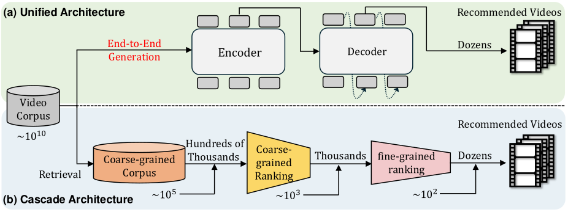
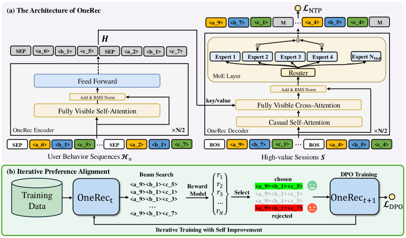
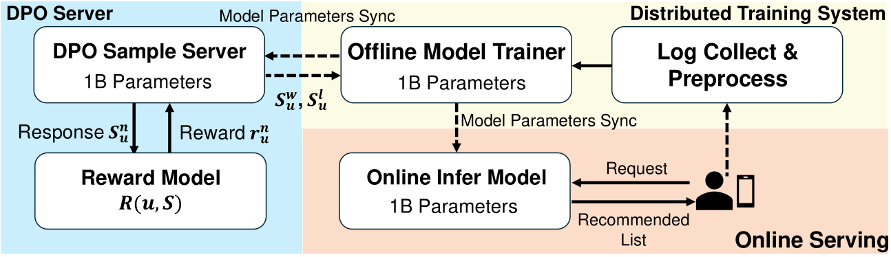
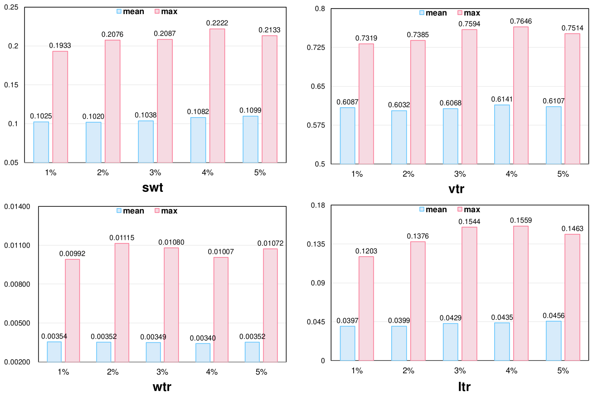
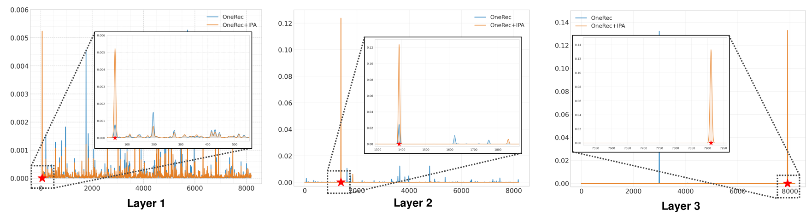
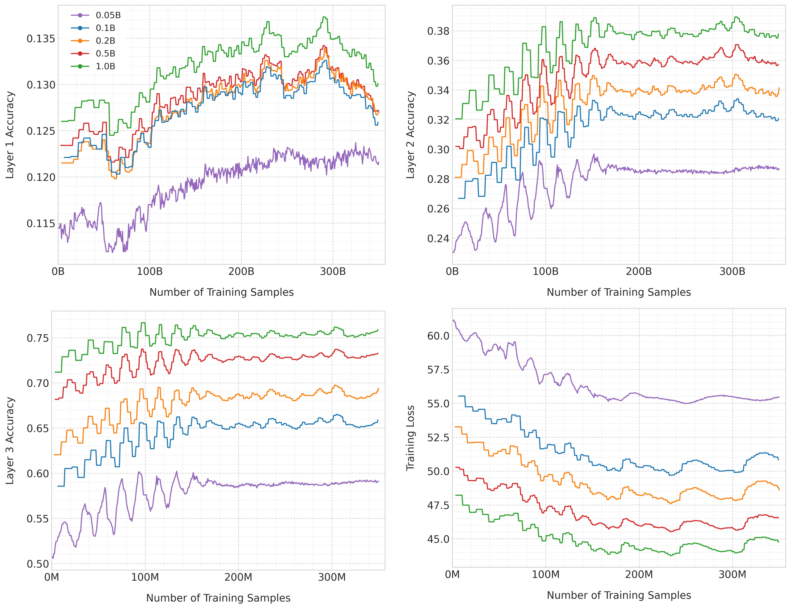

OneRec：以生成式推荐器与偏好对齐统一召回与排序
摘要
近年来，基于生成式召回的推荐系统（GR）作为一种颇具前景的范式出现，它以自回归方式直接生成候选视频。然而，大多数现代推荐系统采用“召回-排序”策略，其中生成模型仅在召回阶段充当选择器。本文提出OneRec，它以统一的生成模型替代级联学习框架。据我们所知，这是首个在真实场景中显著超越当前复杂且精心设计的推荐系统的端到端生成模型。 具体而言，OneRec包括：1) 编码器-解码器结构，它编码用户的历史行为序列，并逐步解码用户可能感兴趣的视频。我们采用稀疏混合专家（MoE）来扩展模型容量，而不成比例地增加计算FLOPs。 2) 按会话生成的方法。与传统下一物品预测不同，我们提出按会话生成，相比依赖手工规则来恰当组合生成结果的逐点生成，它更优雅且上下文连贯。3) 迭代偏好对齐模块，结合直接偏好优化（DPO）以提升生成结果的质量。与NLP中的DPO不同，推荐系统通常对每个用户的浏览请求只有一次展示结果的机会，因此无法同时获得正样本和负样本。为解决这一限制，我们设计了一个奖励模型来模拟用户生成，并根据推荐系统在线学习的属性定制采样策略。 大量实验表明，有限数量的DPO样本即可对齐用户兴趣偏好，并显著提升生成结果的质量。我们将OneRec部署在快手（一个拥有数亿日活跃用户的短视频推荐平台）的主场景中，实现了观看时长1.6%的提升，这是实质性的改进。
1. 引言
为平衡效率与效果，大多数现代推荐系统采用级联排序策略(Covington et al., 2016; Liu et al., 2017; Wang et al., 2011; Qin et al., 2022)。如图1(b)所示，典型的级联排序系统采用三阶段流水线：召回(Covington et al., 2016; Huang et al., 2013; Zhu et al., 2018)、粗排(Ma et al., 2021; Wang et al., 2020)和排序(Burges, 2010; Guo et al., 2017; Hidasi, 2015; Zhou et al., 2019, 2018; Pi et al., 2020; Chang et al., 2023)。每个阶段负责从接收到的物品中选出前个物品，并将结果传递给下一阶段，共同平衡系统响应时间与排序准确性之间的权衡。

尽管在实践中高效，现有方法通常独立对待每个排序器，其中每个孤立阶段的效力成为后续排序阶段的上限，从而限制了整体排序系统的性能。尽管已有多种努力(Gallagher et al., 2019; Fei et al., 2021; Hron et al., 2021; Qin et al., 2022; Huang et al., 2023; Wang et al., 2024b)通过使排序器之间交互来提升整体推荐性能，但它们仍保持传统的级联排序范式。近年来，基于生成式召回的推荐系统（GR）(Rajput et al., 2023; Wang et al., 2024a; Zheng et al., 2024)作为一种颇具前景的范式出现，它以自回归序列生成方式直接生成候选物品的标识符。通过用量化语义ID（编码物品语义(Lee et al., 2022)）为物品建立索引，推荐系统可以利用物品中丰富的语义信息。GR的生成特性使其适合通过束搜索解码直接选择候选物品，并产生更多样化的推荐结果。然而，当前的生成模型仅在召回阶段充当选择器，因为其推荐准确性尚未达到精心设计的多级级联排序器的水平。
为解决上述挑战，我们提出了一种用于单阶段推荐的统一端到端生成框架，名为OneRec。首先，我们提出了一种编码器-解码器架构。受训练大语言模型中所观察到的缩放定律启发，我们发现扩展推荐模型的容量也能持续提升性能。因此，我们基于MoE结构(Zoph et al., 2022; Du et al., 2022; Dai et al., 2024)扩大模型参数，这显著提升了模型刻画用户兴趣的能力。其次，不同于传统的对下一物品进行逐点预测，我们提出了一种按会话的列表生成方法，它考虑每个会话内物品的相对内容和顺序。逐点生成方法需要手工策略来确保生成结果的连贯性和多样性。相比之下，按会话的学习过程通过向模型输入用户偏好的数据，使模型能够自主学习最优的会话结构。最后但同样重要的是，我们探索使用直接偏好优化（DPO）(Rafailov et al., 2024)进行偏好学习，以进一步提升生成结果的质量。为构建偏好对，我们受困难负采样(Shi et al., 2023)启发，从束搜索结果中创建自困难拒绝样本，而非随机采样。我们提出一种迭代偏好对齐（IPA）策略，根据预训练奖励模型（RM）提供的分数对采样响应进行排序，识别最佳选中样本和最差拒绝样本。我们在大规模工业数据集上的实验表明了所提方法的优越性。我们还进行了一系列消融实验，以详细证明每个模块的有效性。本工作的主要贡献总结如下：
-
•
为克服级联排序的局限，我们引入OneRec，一种单阶段生成式推荐框架。 据我们所知，这是首批能够以统一生成模型处理物品推荐的工业解决方案之一，显著超越了传统的多阶段排序流水线。
-
•
我们通过按会话生成的方式突出了模型容量和目标物品上下文信息的必要性，这能够实现更准确的预测并增强生成物品的多样性。
-
•
我们提出了一种基于个性化奖励模型的新型自困难负样本选择策略。借助直接偏好优化，我们增强了OneRec在更广泛用户偏好范围内的泛化能力。大量离线实验和在线A/B测试证明了它们的有效性和高效性。

2. 相关工作
2.1. 生成式推荐
近年来，随着生成模型的显著进展，生成式推荐受到越来越多的关注。与传统的基于嵌入的召回方法（主要依赖双塔模型计算每个候选物品的排序分数，并利用高效的MIPS或ANN (Houle and Nett, 2014; Muja and Lowe, 2014; Shrivastava and Li, 2014; Ge et al., 2013; Jegou et al., 2010)搜索系统来检索前个相关物品）不同，生成式召回（GR）(Tang et al., 2023)方法将从数据库中检索相关文档的问题表述为序列生成任务，即顺序生成相关文档词元。文档词元可以是文档标题、文档ID或预训练语义ID (Tay et al., 2022)。GENRE (De Cao et al., 2020)首次采用Transformer架构进行实体检索，基于条件上下文以自回归方式生成实体名称。DSI (Tay et al., 2022)首次提出为文档分配结构化语义ID并训练编码器-解码器模型进行生成式文档检索的概念。遵循这一范式，TIGER (Rajput et al., 2023)引入了面向推荐系统的生成式物品召回模型的表述。
除生成框架外，如何为物品建立索引也日益受到关注。近期研究聚焦于语义索引技术(Rajput et al., 2023; Tay et al., 2022; Feng et al., 2022)，其旨在基于内容信息为物品建立索引。具体而言，TIGER (Rajput et al., 2023)和LC-Rec (Zheng et al., 2024)将残差量化（RQ-VAE）应用于由物品标题和描述得到的文本嵌入以进行词元化。Recforest (Feng et al., 2022)对物品文本嵌入使用层次化k-means聚类，以获得作为词元的聚类索引。此外，近期研究如EAGER (Wang et al., 2024a)探索将语义信息和协同信息同时整合到词元化过程中。
2.2. 语言模型的偏好对齐
在大语言模型（LLMs）的后训练（Dubey 等，2024）阶段，基于人类反馈的强化学习（RLHF）（Stiennon 等，2020；Ouyang 等，2022）是一种通过强化学习技术、在代表人类反馈的奖励模型引导下使LLMs与人类价值观对齐的常用方法。然而，RLHF存在不稳定和低效的问题。直接偏好优化（DPO）（Rafailov 等，2024）被提出，它以闭式形式推导出最优策略，并能够利用偏好数据进行直接优化。除此之外，还提出了若干变体以进一步改进原始DPO。例如，IPO（Azar 等，2024）用一个通用目标绕过了DPO中的两个近似。cDPO（Rafailov 等，2024）通过引入超参数来缓解噪声标签的影响。rDPO（Chowdhury 等，2024）设计了原始二元交叉熵损失的无偏估计。其他变体包括CPO（Xu 等，2024a）、simDPO（Chowdhury 等，2024），也在各个方面增强或扩展了 DPO。然而，与传统NLP场景中偏好数据由人类显式标注不同，推荐系统中的偏好学习由于用户-物品交互数据稀疏而面临独特挑战。这一挑战导致将DPO适配于推荐系统在很大程度上仍未被探索。与S-DPO聚焦于在基于LM的推荐器的用户偏好数据中引入多个负样本不同，我们训练一个奖励模型，并基于奖励模型的分数为不同用户选择个性化偏好数据。
3. 方法
在本节中，我们提出OneRec，一个通过单阶段召回方式生成目标物品的端到端框架。在第3.1节中，我们首先介绍工业应用中单阶段生成式推荐流程的特征工程。然后，在第3.2节中，我们形式化定义会话级生成任务，并展示我们所提出的OneRec模型的架构。最后，我们在第3.3节中详细阐述该模型借助个性化奖励模型进行自硬负采样（self-hard negative sampling）的能力，并演示我们如何通过直接偏好优化迭代提升模型性能。OneRec的整体框架如图2所示。
3.1. 预备知识
在本节中，我们从特征工程的角度介绍单阶段生成式推荐流程的构建。对于用户侧特征，OneRec以正历史行为序列作为输入，其中表示用户有效观看或交互过（点赞、关注、分享）的视频，是行为序列的长度。OneRec的输出是一个视频列表，由一个会话组成，其中是一个会话内的视频数量（“会话”的详细定义可见第3.2节）。
对于每个视频，我们用多模态嵌入来描述它们，这些嵌入与真实用户-物品行为分布（Luo 等，2024）对齐。基于预训练的多模态表示，现有的生成式推荐框架（Liu 等，2024；Rajput 等，2023）使用RQ-VAE（Zeghidour 等，2021）将嵌入编码为语义词元。然而，由于码本分布不均衡（即所谓的沙漏现象 （Kuai 等，2024）），这种方法并非最优。我们采用多级均衡量化机制对进行变换，使用的是残差K-Means量化算法（Luo 等，2024）。在第一级（），初始残差定义为。在每一级，我们有一个码本，其中是码本大小。最近质心节点嵌入的索引通过生成，对于下一级，残差定义为。因此，相应的码本词元通过分层索引生成：
其中是语义ID的总层数。
为了构建均衡的码本，我们采用如算法1中详述的均衡K-means进行物品集划分。给定总视频集合，该算法将集合划分为个簇，其中每个簇恰好包含个视频。在迭代计算过程中，每个质心依次被分配基于欧氏距离最近的个未分配视频，随后使用所分配视频的均值向量重新校准质心。当簇分配达到收敛时，满足终止条件。
3.2. 会话级列表生成
与仅预测下一个视频的传统逐点推荐方法不同，会话级生成旨在基于用户的历史交互序列生成一组高价值会话，这使推荐模型能够捕捉推荐列表中视频之间的依赖关系。具体而言，会话是指响应用户请求而返回的一批短视频，通常包含5到10个视频。会话内的视频通常综合考虑用户兴趣、连贯性和多样性等因素。我们设计了若干标准来识别高质量会话，包括：
-
•
用户在一个会话内实际观看的短视频数量大于或等于5；
-
•
用户观看该会话的总时长超过某一阈值；
-
•
用户表现出交互行为，例如点赞、收藏或分享视频；
这种方法确保我们的会话级模型从真实用户参与模式中学习，并捕捉会话列表内更准确的上下文信息。因此，我们的会话级模型的目标可以形式化为：
| (1) |
其中由语义ID表示：和。
如图2（a）所示，与T5（Xu 等，2024b）架构一致，我们的模型采用基于Transformer的框架，由两个主要组件构成：用于建模用户历史交互的编码器和用于会话列表生成的解码器。具体而言，编码器利用堆叠的多头自注意力和前馈层来处理输入序列。我们将编码后的历史交互特征记为。
解码器以目标会话的语义ID作为输入，并以自回归方式生成目标。为了以合理的经济成本训练更大的模型，对于解码器中的前馈神经网络（FNNs），我们采用Transformer语言模型中常用的MoE架构（Zoph 等，2022；Du 等，2022；Dai 等，2024），并将第个FFN替换为：
| (2) |
其中表示专家总数，是第个专家FFN，表示第个专家的门控值。门控值是稀疏的，即只有个门控值非零，而门控值总数为。这种稀疏性质保证了MoE层内的计算效率，每个词元只会被分配到个专家中并在其中计算。
对于训练，我们在编码开头添加一个起始词元，以如下方式构造解码器输入：
| (3) |
我们利用交叉熵损失对目标会话的语义ID进行下一词元预测。NTP损失形式化为：
| (4) |
在会话级列表生成任务上训练一定量后，我们得到种子模型。
3.3. 基于RM的迭代偏好对齐
第3.2节中定义的高质量会话提供了有价值的训练数据，使模型能够学习何为好的会话，从而保证生成视频的质量。在此基础上，我们旨在通过直接偏好优化（DPO）进一步增强模型能力。在传统自然语言处理（NLP）场景中，偏好数据由人类显式标注。然而，推荐系统中的偏好学习由于用户-物品交互数据稀疏而面临独特挑战，这需要一个奖励模型（RM）。因此，我们在第3.3.1节中引入会话级奖励模型。此外，我们通过提出迭代直接偏好优化来改进传统DPO，使模型能够自我改进，详见第3.3.2节。
3.3.1. 奖励模型训练
我们用表示奖励模型，它为不同用户选择偏好数据。此处，输出表示对应用户（通常由用户行为表示）对会话偏好的奖励。 为了使RM具备对会话排序的能力，我们首先提取目标感知表示，它对应于每个物品，这些物品位于中，其中表示目标感知操作（例如对用户行为的目标注意力）。因此我们得到目标感知表示，它对应于会话。然后，会话内的物品通过自注意力层相互交互，以融合不同物品之间的必要信息：
| (5) |
接下来我们利用不同的塔对多目标奖励进行预测，并用丰富的推荐数据对RM进行预训练：
| (6) |
在得到每个会话的所有估计奖励和真实标签后，我们直接最小化二元交叉熵损失来训练RM。损失函数定义如下：
| (7) |
3.3.2. 迭代偏好对齐
基于预训练的RM和当前的OneRec，我们通过束搜索为每个用户生成个不同的 响应：
| (8) |
其中我们用表示。
然后我们计算每个响应的奖励，计算依据是RM：
| (9) |
接下来我们构建偏好对，具体选择奖励值最高的胜出响应和奖励值最低的落败响应。给定偏好对，我们现在可以训练一个新模型，它从模型初始化，并使用结合了DPO损失（Rafailov 等，2024）的损失函数更新，以从偏好对中学习。每个偏好对对应的损失如下：
| (10) |
| Model | Watching-Time Metrics | Interaction Metrics | ||||||
| swt | vtr | wtr | ltr | |||||
| mean | max | mean | max | mean | max | mean | max | |
| Pointwise Discriminative Method | ||||||||
| SASRec | 0.03750.002 | 0.08030.005 | 0.43130.013 | 0.58010.013 | 0.002940.001 | 0.009780.001 | 0.03140.002 | 0.06040.004 |
| BERT4Rec | 0.03360.002 | 0.07060.004 | 0.41920.014 | 0.56330.013 | 0.002810.001 | 0.009320.001 | 0.03160.002 | 0.06060.004 |
| FDSA | 0.03250.002 | 0.06830.005 | 0.41450.015 | 0.55880.014 | 0.002710.001 | 0.009210.001 | 0.03130.002 | 0.06040.003 |
| Pointwise Generative Method | ||||||||
| TIGER-0.1B | 0.08790.007 | 0.12860.010 | 0.58260.016 | 0.66250.017 | 0.002770.001 | 0.006710.001 | 0.03160.004 | 0.05410.007 |
| TIGER-1B | 0.08730.006 | 0.13680.010 | 0.58270.015 | 0.67760.015 | 0.002920.001 | 0.007580.001 | 0.03230.004 | 0.05790.008 |
| Listwise Generative Method | ||||||||
| OneRec-0.1B | 0.09730.010 | 0.15010.015 | 0.60010.021 | 0.69810.021 | 0.003260.001 | 0.008700.001 | 0.03490.009 | 0.06420.015 |
| OneRec-1B | 0.09910.008 | 0.15290.012 | 0.60390.020 | 0.70130.020 | 0.003490.001 | 0.009190.002 | 0.03600.005 | 0.06600.008 |
| Listwise Generative Method with Preference Alignment | ||||||||
| OneRec-1BDPO | 0.10140.010 | 0.15950.015 | 0.61270.017 | 0.71160.016 | 0.003390.001 | 0.008960.001 | 0.03510.004 | 0.06440.008 |
| OneRec-1BIPO | 0.09790.003 | 0.15280.005 | 0.60000.007 | 0.70120.007 | 0.003350.001 | 0.009050.001 | 0.03500.003 | 0.06540.004 |
| OneRec-1BcDPO | 0.09930.006 | 0.15470.008 | 0.60300.011 | 0.70300.009 | 0.003390.001 | 0.009010.001 | 0.03550.006 | 0.06520.009 |
| OneRec-1BrDPO | 0.10050.006 | 0.15550.008 | 0.60710.014 | 0.70590.011 | 0.003390.001 | 0.008990.001 | 0.03570.004 | 0.06570.006 |
| OneRec-1BCPO | 0.09930.008 | 0.15380.012 | 0.60450.021 | 0.70290.018 | 0.003430.001 | 0.009110.002 | 0.03570.008 | 0.06590.014 |
| OneRec-1BsimPO | 0.09950.008 | 0.15360.013 | 0.60470.016 | 0.70220.015 | 0.003490.001 | 0.009180.001 | 0.03600.005 | 0.06590.008 |
| OneRec-1BS-DPO | 0.10210.008 | 0.15750.013 | 0.60960.016 | 0.70700.015 | 0.003450.001 | 0.009090.001 | 0.03610.004 | 0.06590.008 |
| OneRec-1BIPA | 0.10250.009 | 0.19330.017 | 0.61410.020 | 0.76460.021 | 0.003540.001 | 0.009920.001 | 0.03970.004 | 0.12030.010 |

4. 系统部署
OneRec 已成功落地于真实工业场景。为兼顾稳定性与性能，我们部署 OneRec-1B 用于在线服务。如图 3 所示，我们的部署架构由三个核心组件构成：1）训练系统，2）在线服务系统，以及 3）DPO 样本服务器。系统将收集到的交互日志作为训练数据处理，首先采用下一词元预测目标 训练种子模型。收敛后，我们加入 DPO 损失 进行偏好对齐，并利用 XLA 与 bfloat16 混合精度训练来优化计算效率与内存利用率。训练好的参数被同步至在线推理模块和 DPO 采样服务器，用于实时服务和基于偏好的数据筛选。为提升推理性能，我们实施了两项关键优化：将键值缓存解码机制与 float16 量化相结合以降低 GPU 内存开销，以及采用束大小为 128 的束搜索配置以平衡生成质量与延迟。此外，得益于 MoE 架构，推理过程中仅激活 13% 的参数。
5. 实验
在本节中，我们首先在离线设置下将 OneRec 与逐点方法及若干 DPO 变体进行比较。然后，我们对我们提出的模块进行若干消融实验，以验证 OneRec 的有效性。最后，我们将 OneRec 部署到线上并进行 A/B 测试，以进一步验证其在快手（Kuaishou）上的性能。
5.1. 实验设置
5.1.1. 实现细节
我们的模型使用 Adam 优化器训练，初始学习率为 。我们使用 NVIDIA A800 GPU 进行 OneRec 优化。DPO 样本比例 在整个训练过程中设为 1%，并且我们通过束搜索为每个用户生成 个不同的响应；语义标识符聚类过程在每个码本层使用 个簇，码本层数设为 ；混合专家（Mixture-of-Experts）架构包含 个专家，每次前向传播激活其中 个专家，激活通过 top- 选择实现；对于会话建模，我们考虑 个目标会话物品，并采用 个历史行为作为上下文。
5.1.2. 基线方法
我们采用以下具有代表性的推荐模型、DPO 及其变体作为额外的对比基线。基线方法包括：
-
•
SASRec （Kang 和 McAuley，2018） 采用单向 Transformer 架构来捕捉用户-物品交互中的序列依赖关系，用于下一物品预测。
-
•
BERT4Rec （Sun 等，2019） 利用带掩码语言建模的双向 Transformer，通过序列重构来学习上下文物品表示。
-
•
FDSA （Zhang 等，2019） 实现双自注意力通路，在异构推荐场景中联合建模物品级转移与特征级变换模式。
-
•
TIGER （Rajput 等，2023） 利用层次化语义标识符和生成式检索技术，通过自回归序列生成实现序列推荐。
-
•
DPO （Rafailov 等，2024） 通过隐式奖励建模，以由人类反馈数据推导出的闭式奖励函数来形式化偏好优化。
-
•
IPO （Azar 等，2024） 提出一个具备理论基础的偏好优化框架，绕过了标准 DPO 中固有的近似。
-
•
cDPO （Mitchell, ） 引入一个鲁棒性感知的变体，加入标签翻转率参数 以应对带噪的偏好标注。
-
•
rDPO （Chowdhury 等，2024） 利用重要性采样开发了无偏损失估计器，以降低偏好优化中的方差。
-
•
CPO （Xu 等，2024a） 通过联合训练序列似然奖励与监督微调目标，将对比学习与偏好优化统一起来。
-
•
simPO （Meng 等，2024） 通过采用序列级奖励边际并借助归一化概率平均消除对参考模型的依赖，来进行偏好优化。
-
•
S-DPO （Chen 等，2024） 通过困难负样本采样和多物品对比学习，将 DPO 适配于推荐系统，以提升排序准确度。
5.1.3. 评估指标
我们采用若干关键指标评估模型性能。每个指标在评估模型输出的不同方面时发挥不同作用，我们在每次迭代中对随机采样的测试用例集合进行评估。为估计每个特定用户-会话对的各种交互概率，我们采用预训练的奖励模型来评估所推荐会话的价值。我们计算不同目标指标的平均奖励，包括会话观看时长（swt）、浏览概率（vtr）、关注概率（wtr）和点赞概率（ltr）。在这些目标中，swt 和 vtr 是观看时长指标，而 wtr 和 ltr 是交互指标。

5.2. 离线性能
表 1 展示了 OneRec 与各类基线之间的全面比较。对于观看时长指标，我们主要关注会话观看时长（swt），在交互指标中主要关注点赞概率（ltr）。我们的结果揭示了三个关键观察：
首先，所提出的会话级生成方法显著优于传统的基于点积的方法和 TIGER 等逐点生成方法。与 TIGER-1B 相比，OneRec-1B 的最大 swt 高 1.78%，最大 ltr 高 3.36%。这证明了会话级建模在维持推荐间上下文连贯性方面的优势，而逐点方法难以在生成输出的连贯性与多样性之间取得平衡。
其次，小比例的 DPO 训练即可带来显著收益。仅使用 1% 的 DPO 训练比例（），OneRec-1B+IPA 在最大 swt 上比基础 OneRec-1B 高出 4.04%，在最大 ltr 上高出 5.43%。这表明有限的 DPO 训练即可有效地使模型对齐到期望的生成模式。
第三，所提出的 IPA 策略优于各种现有 DPO 变体。如表 1 所示，IPA 相比其他 DPO 实现取得了更优的性能。值得注意的是，一些 DPO 基线甚至不如未对齐的 OneRec-1B 模型，这表明迭代挖掘自生成输出以进行偏好选择，被证明比其他方法更有效。


5.3. 消融研究
5.3.1. DPO 样本比例消融
为了研究 DPO 训练中样本比例 的影响，我们在受控条件下将 DPO 样本比例从 1% 变化到 5%。如图 4 所示，消融结果表明，提高样本比例在多个评估目标上仅带来边际性能提升。值得注意的是，尽管计算开销增加，超出 1% 基线的性能增益仍然不显著。需要指出的是，DPO 样本服务器推理期间，样本比例与 GPU 资源利用率之间存在线性关系：5% 的样本比例需要 的 GPU 资源，以 1% 的基线为参照。这种扩展特性在计算效率与模型性能之间建立了明确的权衡。因此，在权衡计算效率与性能的最佳折中后，我们采用 1% 的 DPO 样本比例进行训练，其达到了所观测最大性能平均 95% 的水平，而仅需更高样本比例所需计算资源的 20%。
5.3.2. 模型扩展消融
我们评估了模型规模增大时 OneRec 的表现。如图 6 所示，将 OneRec 从 0.05B 扩展到 1B 能持续获得准确度提升，展现出稳定的扩展特性。具体而言，与 OneRec-0.05B 相比，OneRec-0.1B 在准确度上取得了显著的最大 14.45% 提升，此外，还可分别获得 5.09%、5.70% 和 5.69% 的额外准确度提升，分别对应扩展到 0.2B、0,5B 和 1B。
5.4. OneRec 的预测动态
如图 5 所示，我们展示了 8192 个编码在不同层上的预测概率分布，其中红色星号表示奖励值最高的物品的语义 ID。与 OneRec 基线相比，OneRec+IPA 在预测分布上表现出显著的置信度偏移，表明我们提出的偏好对齐策略有效地促使基础模型生成偏好的生成模式。此外，我们观察到第一层的概率分布比后续层具有更大的离散度（熵 = 6.00），而后续层的分布逐渐集中（第二层平均熵 = 3.71，第三层熵 = 0.048）。这种层次化的不确定性降低可归因于自回归解码机制：初始层的预测继承自前序解码步骤的更高不确定性，而后续层则受益于约束决策空间的累积上下文。
5.5. 在线 A/B 测试
为评估 OneRec 的在线性能，我们在快手主页面视频推荐场景中开展了严格的在线 A/B 测试，并以 1% 的主流量进行实验，比较 OneRec 与当前多阶段推荐系统的性能。我们用 总观看时长来衡量用户观看视频的总时间，用 平均观看时长计算推荐系统向用户展示所请求的一组视频时，其中每个视频的平均观看时间。在线评估显示，OneRec 在总观看时长上取得了 1.68% 的提升，在平均观看时长上取得了 6.56% 的提升，这表明 OneRec 取得了好得多的推荐效果，并为平台带来了可观的收入增量。
| Model | Total Watch Time | Average View Duration |
|---|---|---|
| OneRec-0.1B | +0.57% | +4.26% |
| OneRec-1B | +1.21% | +5.01% |
| OneRec-1B+IPA | +1.68% | +6.56% |
6. 结论
本文聚焦于介绍一种面向单阶段生成式推荐的工业解决方案。我们的方案确立了三个关键贡献：首先，我们通过应用 MoE 架构，以高计算效率有效地扩展了模型参数，为大规模工业推荐提供了可扩展的蓝图；其次，我们发现以会话级生成方式对目标物品的上下文信息进行建模的必要性，证明了上下文序列建模在捕捉用户偏好动态方面本质上优于孤立的逐点方式；此外，我们提出了迭代偏好对齐（IPA）策略，以提升 OneRec 在多样用户偏好模式上的泛化能力。大量离线实验和在线 A/B 测试验证了 OneRec 的有效性与高效性。此外，我们对在线结果的分析揭示，除用户观看时长外，我们的模型在点赞等交互指标上仍存在局限。在未来研究中，我们旨在增强端到端生成式推荐在多目标建模方面的能力，以提供更好的用户体验。
参考文献
- A general theoretical paradigm to understand learning from human preferences. In International Conference on Artificial Intelligence and Statistics, pp. 4447–4455. Cited by: §2.2, 6th item.
- From ranknet to lambdarank to lambdamart: an overview. Learning 11 (23-581), pp. 81. Cited by: §1.
- TWIN: two-stage interest network for lifelong user behavior modeling in ctr prediction at kuaishou. In Proceedings of the 29th ACM SIGKDD Conference on Knowledge Discovery and Data Mining, pp. 3785–3794. Cited by: §1.
- On softmax direct preference optimization for recommendation. In The Thirty-eighth Annual Conference on Neural Information Processing Systems, External Links: Link Cited by: 11st item.
- Provably robust dpo: aligning language models with noisy feedback. In ICML 2024, Cited by: §2.2, 8th item.
- Deep neural networks for youtube recommendations. In Proceedings of the 10th ACM conference on recommender systems, pp. 191–198. Cited by: §1.
- Deepseekmoe: towards ultimate expert specialization in mixture-of-experts language models. arXiv preprint arXiv:2401.06066. Cited by: §1, §3.2.
- Autoregressive entity retrieval. arXiv preprint arXiv:2010.00904. Cited by: §2.1.
- Glam: efficient scaling of language models with mixture-of-experts. In International Conference on Machine Learning, pp. 5547–5569. Cited by: §1, §3.2.
- The llama 3 herd of models. arXiv preprint arXiv:2407.21783. Cited by: §2.2.
- GemNN: gating-enhanced multi-task neural networks with feature interaction learning for ctr prediction. In Proceedings of the 44th international ACM SIGIR conference on research and development in information retrieval, pp. 2166–2171. Cited by: §1.
- Recommender forest for efficient retrieval. Advances in Neural Information Processing Systems 35, pp. 38912–38924. Cited by: §2.1.
- Joint optimization of cascade ranking models. In Proceedings of the twelfth ACM international conference on web search and data mining, pp. 15–23. Cited by: §1.
- Optimized product quantization. IEEE transactions on pattern analysis and machine intelligence 36 (4), pp. 744–755. Cited by: §2.1.
- DeepFM: a factorization-machine based neural network for ctr prediction. arXiv preprint arXiv:1703.04247. Cited by: §1.
- Session-based recommendations with recurrent neural networks. arXiv preprint arXiv:1511.06939. Cited by: §1.
- Rank-based similarity search: reducing the dimensional dependence. IEEE transactions on pattern analysis and machine intelligence 37 (1), pp. 136–150. Cited by: §2.1.
- On component interactions in two-stage recommender systems. Advances in neural information processing systems 34, pp. 2744–2757. Cited by: §1.
- Learning deep structured semantic models for web search using clickthrough data. In Proceedings of the 22nd ACM international conference on Information & Knowledge Management, pp. 2333–2338. Cited by: §1.
- Cooperative retriever and ranker in deep recommenders. In Proceedings of the ACM Web Conference 2023, pp. 1150–1161. Cited by: §1.
- Product quantization for nearest neighbor search. IEEE transactions on pattern analysis and machine intelligence 33 (1), pp. 117–128. Cited by: §2.1.
- Self-attentive sequential recommendation. In 2018 IEEE international conference on data mining (ICDM), pp. 197–206. Cited by: 1st item.
- Breaking the hourglass phenomenon of residual quantization: enhancing the upper bound of generative retrieval. In Proceedings of the 2024 Conference on Empirical Methods in Natural Language Processing: Industry Track, pp. 677–685. Cited by: §3.1.
- Autoregressive image generation using residual quantization. In Proceedings of the IEEE/CVF Conference on Computer Vision and Pattern Recognition, pp. 11523–11532. Cited by: §1.
- MMGRec: multimodal generative recommendation with transformer model. arXiv preprint arXiv:2404.16555. Cited by: §3.1.
- Cascade ranking for operational e-commerce search. In Proceedings of the 23rd ACM SIGKDD International Conference on Knowledge Discovery and Data Mining, pp. 1557–1565. Cited by: §1.
- QARM: quantitative alignment multi-modal recommendation at kuaishou. arXiv preprint arXiv:2411.11739. Cited by: §3.1.
- Towards a better tradeoff between effectiveness and efficiency in pre-ranking: a learnable feature selection based approach. In Proceedings of the 44th International ACM SIGIR Conference on Research and Development in Information Retrieval, pp. 2036–2040. Cited by: §1.
- SimPO: simple preference optimization with a reference-free reward. In Advances in Neural Information Processing Systems (NeurIPS), Cited by: 10th item.
- [30] A note on dpo with noisy preferences and relationship to ipo, 2023. URL https://ericmitchell. ai/cdpo. pdf. Cited by: 7th item.
- Scalable nearest neighbor algorithms for high dimensional data. IEEE transactions on pattern analysis and machine intelligence 36 (11), pp. 2227–2240. Cited by: §2.1.
- Training language models to follow instructions with human feedback. Advances in neural information processing systems 35, pp. 27730–27744. Cited by: §2.2.
- Search-based user interest modeling with lifelong sequential behavior data for click-through rate prediction. In Proceedings of the 29th ACM International Conference on Information & Knowledge Management, pp. 2685–2692. Cited by: §1.
- Rankflow: joint optimization of multi-stage cascade ranking systems as flows. In Proceedings of the 45th International ACM SIGIR Conference on Research and Development in Information Retrieval, pp. 814–824. Cited by: §1, §1.
- Direct preference optimization: your language model is secretly a reward model. Advances in Neural Information Processing Systems 36. Cited by: §1, §2.2, §3.3.2, 5th item.
- Recommender systems with generative retrieval. Advances in Neural Information Processing Systems 36, pp. 10299–10315. Cited by: §1, §2.1, §2.1, §3.1, 4th item.
- On the theories behind hard negative sampling for recommendation. In Proceedings of the ACM Web Conference 2023, pp. 812–822. Cited by: §1.
- Asymmetric lsh (alsh) for sublinear time maximum inner product search (mips). Advances in neural information processing systems 27. Cited by: §2.1.
- Learning to summarize with human feedback. Advances in Neural Information Processing Systems 33, pp. 3008–3021. Cited by: §2.2.
- BERT4Rec: sequential recommendation with bidirectional encoder representations from transformer. In Proceedings of the 28th ACM international conference on information and knowledge management, pp. 1441–1450. Cited by: 2nd item.
- Recent advances in generative information retrieval. In Proceedings of the Annual International ACM SIGIR Conference on Research and Development in Information Retrieval in the Asia Pacific Region, pp. 294–297. Cited by: §2.1.
- Transformer memory as a differentiable search index. Advances in Neural Information Processing Systems 35, pp. 21831–21843. Cited by: §2.1, §2.1.
- A cascade ranking model for efficient ranked retrieval. In Proceedings of the 34th international ACM SIGIR conference on Research and development in Information Retrieval, pp. 105–114. Cited by: §1.
- EAGER: two-stream generative recommender with behavior-semantic collaboration. In Proceedings of the 30th ACM SIGKDD Conference on Knowledge Discovery and Data Mining, pp. 3245–3254. Cited by: §1, §2.1.
- Adaptive neural ranking framework: toward maximized business goal for cascade ranking systems. In Proceedings of the ACM on Web Conference 2024, pp. 3798–3809. Cited by: §1.
- Cold: towards the next generation of pre-ranking system. arXiv preprint arXiv:2007.16122. Cited by: §1.
- Contrastive preference optimization: pushing the boundaries of llm performance in machine translation. arXiv preprint arXiv:2401.08417. Cited by: §2.2, 9th item.
- Openp5: an open-source platform for developing, training, and evaluating llm-based recommender systems. In Proceedings of the 47th International ACM SIGIR Conference on Research and Development in Information Retrieval, pp. 386–394. Cited by: §3.2.
- Soundstream: an end-to-end neural audio codec. IEEE/ACM Transactions on Audio, Speech, and Language Processing 30, pp. 495–507. Cited by: §3.1.
- Feature-level deeper self-attention network for sequential recommendation.. In IJCAI, pp. 4320–4326. Cited by: 3rd item.
- Adapting large language models by integrating collaborative semantics for recommendation. In 2024 IEEE 40th International Conference on Data Engineering (ICDE), pp. 1435–1448. Cited by: §1, §2.1.
- Deep interest evolution network for click-through rate prediction. In Proceedings of the AAAI conference on artificial intelligence, Vol. 33, pp. 5941–5948. Cited by: §1.
- Deep interest network for click-through rate prediction. In Proceedings of the 24th ACM SIGKDD international conference on knowledge discovery & data mining, pp. 1059–1068. Cited by: §1.
- Learning tree-based deep model for recommender systems. In Proceedings of the 24th ACM SIGKDD international conference on knowledge discovery & data mining, pp. 1079–1088. Cited by: §1.
- Designing effective sparse expert models. arXiv preprint arXiv:2202.08906 2 (3), pp. 17. Cited by: §1, §3.2.